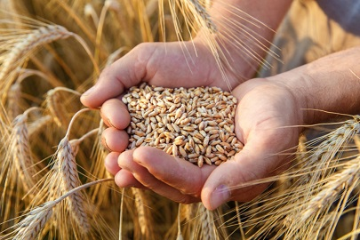

Odmiany pszenicy charakteryzują się bardzo różnymi wymogami odnośnie gleby.
Niektóre dobrze plonują tylko na dobrych stanowiskach (gleby klasy I, II, III ),
ale są też odmiany o mniejszych wymaganiach całkiem nieźle plonujące na glebach klas IVa czy też IV b.
W wyborze stanowiska dla pszenicy preferuje się gleby średnie i ciężkie o dużej zawartości próchnicy,
prawidłowych stosunkach powietrzno – wodnych i dobrym pH. Hodowla odmian pszenicy stawia sobie za cel uzyskiwania
wysokiego potencjału plonotwórczego przy jednocześnie wysokiej jakości technologicznej ziarna.
Niestety większość odmian pszenicy zaliczanych do grupy A charakteryzuje się dość niską mrozoodpornością,
co niestety w rejonach mocnych zim zmusza do wyboru odmian z grupy jakościowej B.
Podział odmian pszenicy został przedstawiony w tabelce poniżej.

Właściwy wyboru odmiany z uwzględnieniem warunków siedliskowych i glebowych oraz optymalny poziom nawożenia,
agrotechniki i ochrony można liczyć na zadowalające plony. Otrzymany plon musi spełniać kilka warunków jakościowych
określonych dla zbóż konsumpcyjnych takich jak:
- Wilgotność < 15%
- Zanieczyszczenia ogółem 6% w tym:
- Szkodliwe dla zdrowia 0,5% w tym: wyrównanie ziarna 75%